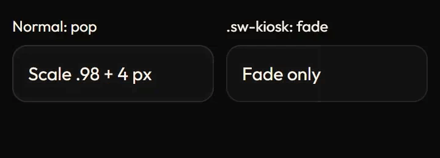
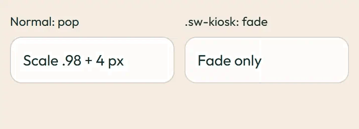
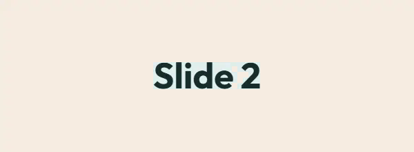

Kiosk and display screens
Slides fade 400 ms. Open the dialog in each column: the normal screen pops (scale and offset), the kiosk column only fades. Under prefers-reduced-motion: reduce the motion is removed and the end state shows at once.
Slide fade (sw-display-fade)
Normal screen
.sw-kiosk
Image previews
Static posters are shown first. Play starts an animated image; Pause restores its poster. Reduced motion keeps posters visible.


